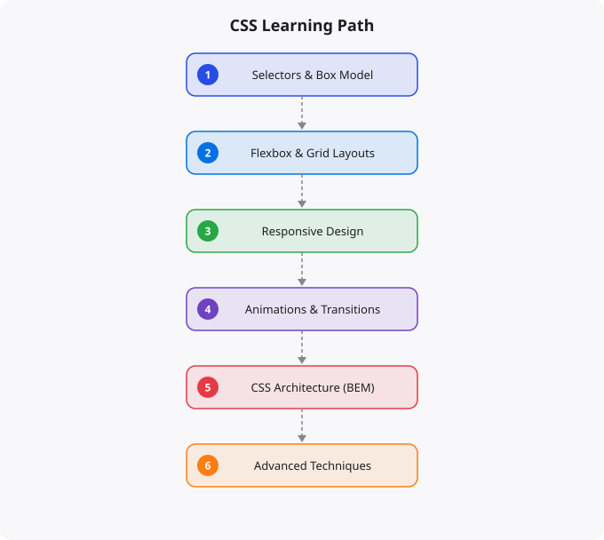

Learn CSS: Beginner to Professional

CSS (Cascading Style Sheets) is the language that makes the web look the way it does. Every color, every layout, every animation, every responsive design adjustment you see in a browser is controlled by CSS. Despite being one of the three core technologies of the web alongside HTML and JavaScript, CSS is often underestimated — dismissed as simple by beginners and frustrating by developers who have not invested in understanding it properly. This guide covers the journey from understanding basic CSS rules to writing professional, maintainable CSS that handles complex layouts and responsive designs.
What CSS Actually Does
HTML defines the structure and content of a web page — what exists and what it means semantically. CSS defines how that content looks and is presented — colors, fonts, sizes, spacing, layout, and visual effects. Without CSS, every website would look like a plain document with default browser styling. CSS gives designers and developers complete control over the visual presentation of web content. The cascading in CSS refers to how styles are applied: CSS rules cascade down from general to specific, and when multiple rules apply to the same element, the most specific rule wins. Understanding this cascade — specifically, how specificity is calculated and how inheritance works — is the key to CSS that behaves predictably rather than mysteriously.
Phase 1: Fundamentals (Weeks 1-4)
Start with selectors — the part of a CSS rule that defines which elements the rule applies to. Element selectors (p, h1, div), class selectors (.card, .btn-primary), ID selectors (#header, #footer), attribute selectors, and pseudo-classes (:hover, :focus, :first-child) — learning the full selector vocabulary is essential. Understand the box model: every element in CSS is a box with content, padding, border, and margin. Misunderstanding the box model is responsible for a huge proportion of CSS layout confusion. Learn box-sizing: border-box, which makes width calculations much more intuitive. Typography: font-family, font-size, font-weight, line-height, letter-spacing, text-align. Good typography is often the difference between a design that looks professional and one that looks amateurish. Colors: hex codes, RGB, HSL, and the newer CSS color functions. Understanding when to use each format and how to create consistent color systems.
Phase 2: Layout — The Most Important CSS Skill (Weeks 4-10)
Layout is where CSS gets genuinely complex and genuinely powerful. Flexbox is the modern standard for one-dimensional layout — arranging items in a row or column with control over alignment, spacing, and sizing. Every front-end developer must understand Flexbox deeply: flex-direction, justify-content, align-items, flex-grow, flex-shrink, flex-basis, and the flex shorthand. Master Flexbox and you can build almost any UI component. CSS Grid is the modern standard for two-dimensional layout — placing items in rows and columns simultaneously. Grid is ideal for page layouts, card grids, and any design that has both row and column structure. grid-template-columns, grid-template-rows, grid-area, and the fr unit for fractional space distribution. Responsive design with media queries: adapting your layout and styles based on the viewport width. Understanding breakpoints, the mobile-first approach (designing for mobile first, then adding complexity for larger screens), and the difference between min-width and max-width queries.
Phase 3: Advanced CSS Techniques (Weeks 10-20)
CSS custom properties (variables): defining and using variables in CSS to create consistent design tokens and enable theming. This is essential for maintainable CSS in any moderately complex project. CSS animations and transitions: creating smooth visual feedback and animations entirely in CSS without JavaScript. Understanding @keyframes, transition properties, transform functions (translate, rotate, scale), and performance considerations. Pseudo-elements (::before, ::after): creating decorative elements and effects entirely in CSS without additional HTML elements. CSS positioning: understanding static, relative, absolute, fixed, and sticky positioning, when to use each, and how they interact with each other. The stacking context and z-index behavior that confuses many developers.
Professional CSS Practices
Methodologies for organizing CSS in large projects: BEM (Block Element Modifier) naming convention, SMACSS, and the utility-first approach pioneered by Tailwind CSS. Understanding these approaches helps you write CSS that remains maintainable as projects grow and teams collaborate. CSS preprocessors like Sass/SCSS: variables, nesting, mixins, functions, and partials that make CSS more powerful and DRY. Even as CSS has incorporated many features that previously required Sass, preprocessors remain widely used in professional projects. CSS frameworks: Bootstrap provides pre-built components and a responsive grid. Tailwind provides utility classes that compose into custom designs without writing custom CSS. Understanding when frameworks help (rapid development, team consistency) and when they hinder (performance constraints, highly custom designs). Performance considerations: Critical CSS, lazy-loading non-critical styles, CSS minification, avoiding selector complexity that slows browser style calculations. Browser developer tools: the Elements panel for live CSS inspection and editing is an indispensable tool for CSS development and debugging. Professional CSS development is as much art as science — it requires good taste and visual judgment alongside technical skill.
Key takeaways
- CSS is often dismissed as "not real programming". Wrong. Modern CSS is powerful, expressive, and gets you 80% of frontend polish.
- Flexbox and Grid are the two layout systems you must master. Once these click, you'll wonder how you ever tolerated floats.
- Custom properties (CSS variables) plus modern selectors (`:has`, `:is`, `:where`) make CSS feel almost like a programming language now.
- Avoid CSS-in-JS unless your stack truly needs it. Vanilla CSS plus a class-naming convention (BEM, utility classes) handles most apps cleanly.
The CSS Box Model — Foundation of All Layouts
Every HTML element is a rectangular box in CSS. The box model defines how that box is sized and spaced: content (the actual text or image), padding (space between content and border), border (optional visible border around the padding), and margin (space outside the border, separating elements from each other). Understanding that width and height in CSS apply to the content area only by default — and that padding and border add to the total rendered size — explains many layout surprises beginners encounter. Use box-sizing: border-box globally to make width and height include padding and border in their calculation: *, *::before, *::after { box-sizing: border-box; }. This single rule eliminates most box model confusion and is included in virtually every modern CSS framework.
Flexbox for One-Dimensional Layouts
Flexbox is the CSS layout model for arranging items in a single direction (row or column). It solves alignment problems that were previously painful — centering elements, distributing space between items, making items stretch to equal heights. A flex container is created with display: flex. The key properties: flex-direction (row or column), justify-content (alignment along the main axis — flex-start, center, space-between, space-around), align-items (alignment along the cross axis — flex-start, center, stretch), and gap (spacing between items). Learning flexbox well replaces most float-based and inline-block layout techniques from older CSS.
CSS Grid for Two-Dimensional Layouts
CSS Grid is the layout system for two-dimensional layouts — placing elements in rows and columns simultaneously. It is more powerful than flexbox for page-level layout. display: grid creates a grid container. grid-template-columns: repeat(3, 1fr) creates three equal-width columns. grid-column: 1 / 3 spans an item across columns 1 through 3. The combination of Grid for page structure and Flexbox for component-level alignment is the modern standard for CSS layout. Together they handle virtually all layout requirements without float hacks or complex positioning.
Your Path from Beginner to Professional
The progression in CSS: learn the fundamentals (box model, selectors, specificity, the cascade), master layout (flexbox and grid), understand responsive design (media queries, fluid typography, responsive images), learn CSS custom properties (variables), explore CSS transitions and animations for interactivity, and study a methodology like BEM for organizing CSS in larger codebases. The best way to learn CSS is to build things — clone real website layouts, build UI components from scratch, and use browser developer tools constantly to inspect, experiment, and debug.
Disclaimer: This article is for educational purposes only. CSS behavior can vary across browsers and devices. Always test layouts and styles in multiple environments before deploying user-facing interfaces.
Building Real Projects to Solidify Your Skills
Technical skills solidify through building, not through reading. For every concept you learn, immediately apply it to a project. The gap between "I understand the theory" and "I can use this productively" is only crossed through building real things, encountering real problems, and solving them. Tutorials will only take you so far -- real learning happens when you are solving a problem the tutorial does not show you.
Phase 1 - Learn Fundamentals (follow tutorials)
- Complete at least 2 structured tutorials
- Understand core concepts and syntax
- Run and modify the tutorial examples
Phase 2 - Build Something Small (your own idea)
- Build a simple project from scratch (no tutorial)
- You will get stuck -- this is the learning
- Use documentation and Stack Overflow, not the tutorial
Phase 3 - Build Something Real (solve a real problem)
- A tool you personally would use
- Deploy it somewhere publicly accessible
- Show it in your portfolio
Phase 4 - Contribute to Open Source
- Find a project you use and understand
- Start with documentation or small bug fixes
- Progress to feature contributionsThe Learning Habits That Compound Over Years
The engineers who reach senior levels quickly have distinguishing habits: they read documentation rather than only watching tutorials (documentation is always more current and complete), they maintain a personal learning log where they record what they are building and what problems they encountered, they engage with the community around the technology they are learning, and they teach others as a way to deepen their own understanding. These habits create compounding returns -- each week builds on the previous one rather than re-learning forgotten material.
Resources Worth Your Time
Not all learning resources are equal. For most technologies, the official documentation is the most reliable and complete source. Community resources like the Mozilla Developer Network (MDN) for web technologies are excellent. Books by practitioners (not academics writing about a language they do not use professionally) provide depth. Video courses on Udemy or Coursera provide structured progression. Practice platforms like LeetCode, HackerRank, and Exercism provide deliberate practice. The best combination: official docs for reference, one structured course for foundation, and real projects for depth.
More Questions Answered
How do I know when I am good enough to apply for jobs?
When you can build a complete project from scratch without following a tutorial, understand the errors you encounter and know how to debug them, and can explain your code choices to another developer. Imposter syndrome makes everyone feel not ready -- the practical test is whether you can build things and solve problems, not whether you feel confident.
Should I learn multiple technologies or go deep in one?
Go deep first. Surface knowledge in many technologies is less valuable than genuine competence in one. Learn one language to real proficiency, build multiple projects with it, then expand to related tools. A developer who truly knows Python is more valuable than one who has introductory knowledge in Python, JavaScript, Ruby, and Go.
How do I stay motivated when learning gets hard?
Build something you genuinely want to exist. The most sustainable motivation comes from solving your own real problems. When learning feels abstract and purposeless, connect it to a concrete project. Accept that confusion is part of the process -- the feeling of not understanding something yet is how learning feels from the inside, not a sign that you cannot do it.
Frequently Asked Questions
Is this topic relevant for Indian tech professionals?
Yes. India is one of the fastest-growing tech markets globally. These skills are in high demand across startups, MNCs, and product companies in Bangalore, Hyderabad, Pune, and Mumbai.
How do I stay updated on this topic?
Follow official documentation, tech blogs from practitioners, GitHub repositories, and communities like Dev.to, Hashnode, and Reddit. Avoid news that creates urgency without substance.
What resources does SRJahir Tech recommend?
Official documentation first. Then practical tutorials. Then build real projects. SRJahir Tech articles are written from real production experience — bookmark the series that matches your learning goal.
How long does it take to see results after learning?
Consistent daily practice for 3-6 months produces real, usable skills. The key is building projects, not just reading. Every article on SRJahir Tech includes practical examples you can implement today.
Is SRJahir Tech content free?
Yes. All articles on SRJahir Tech are completely free. No paywalls, no subscriptions. Quality technical education should be accessible to everyone, especially aspiring engineers in India.